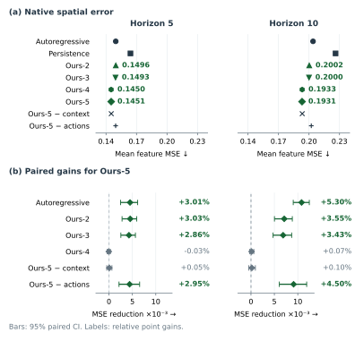
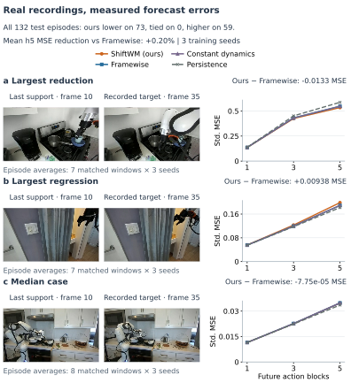

Anchor the observation.
Action-conditioned spatial mixing
with bounded innovation.
Keep the last observation as a reference, mix its spatial features, and bound the correction.
Forecast future visual features from recorded robot commands.
Three-seed native 4×4 feature error at step ten on DROID development data: 141 episodes, 59 sessions. Full comparisons and uncertainty.

Historical context-study demos.
Explore the earlier context model in simulation and recorded robot video. These archived demos use a different predictor and protocol from the spatial ShiftWM above.
Historical context-study simulator observations after each action block. Every frame carries its actual native call; a stopped rollout holds its last image. Playback advances through recorded observations.
These historical context-study development examples illustrate different outcomes under the same goal, initial state and planning budget. They are separate from the historical held-out forecasting averages. Historical two-context architecture. Selection protocol and complete outcome inventory · Frame provenance.
{kind=link}
Historical DROID context study: forecast the recorded future.
In this historical study, three observed frames and a recorded command sequence go into the context world model. It forecasts the visual features of future frames. We score the forecast against features of the actual later recording.
- ObserveThree recorded frames
- ConditionThe supplied robot commands
- PredictFuture visual feature grids
- CompareWithheld future-frame features
RGB footage below shows the recorded interaction. Model outputs appear as feature-error curves and maps; future RGB images are reference observations. Lower feature error means a closer forecast. Physical robot-control success is a separate evaluation.
- 1,126
- recorded episodes
- 433
- recording sessions
- 12
- original-study models
- 48
- original evaluations
DROID by Khazatsky et al. · Dataset & authors · CC BY 4.0 · Clip provenance. Original face blurring is retained. This deterministic data example was selected before model-result review.
Run the historical context model.
Compare the released original context predictor with Framewise on the same recording. This CPU app runs the historical study, not the new spatial model.
Choose a recording, camera and horizon. The demo recomputes predictions from the checkpoint and displays feature-error curves alongside the recorded frames.
Run the inference appOpen the inference demo in a new tab · Hosted research preview; cold starts may take a moment.
The downloadable app runs genuine CPU inference with the released historical context checkpoints. The examples below remain available as a fully reproducible result explorer.
Measured spatial forecasts.
One proposed model, matched baselines and component ablations. The historical context studies remain available below with their own evaluation protocols.
Inspect the component ablations
ShiftWM combines a fixed observed anchor, gated feature mixing and bounded corrections. The controls remove mixing, remove bounds, or remove both. Each spatial condition completed three full training seeds. Feature mixing improves native error; the additional native-error benefit of bounding is inconclusive. Archive IDs Ours-2 through Ours-5 identify these component configurations, while Ours-1 denotes the separate historical context study. These IDs are not separate proposed algorithms or a performance ranking.

See what improves, what changes little, and what still fails

Historical context studies: complete archived comparisons
Interactive tables below retain the original context-model results, including the earlier held-out and fresh-recording studies. Their model labels refer to that historical implementation, not spatial ShiftWM.
| Method | Mean | Seed SD |
|---|
Three training seeds for learned adaptations; the frozen backbone has one checkpoint. Gains are ratios of seed means, not significance tests. These feature-space forecasting errors are separate from goal-reaching success rates and use a different feature reference from the DROID study. All planning results are reported in the paper.
Historical context model · prespecified DROID study
| Method | Mean | Seed SD |
|---|
Three training seeds; equal episode weight after averaging its windows. Intervals resample sessions and seeds together (10,000 draws), without multiple-comparison correction. Green marks a positive point estimate; the interval indicates uncertainty. The two camera views share recordings.
Evaluation details and long-horizon behavior
The primary five-block comparison improves 2.94% over persistence and 0.20% over Framewise. The Framewise interval includes zero. At ten blocks, error is 1.91% and 1.24% higher than Framewise on cameras 1 and 2. Improving long-horizon robustness is an active direction.
The fixed subset contains 851 training, 143 validation and 132 test episodes with disjoint recording sessions. It is a prespecified DROID subset study; object/scene disjointness and physical policy performance were not evaluated.
Complete interpretation{kind=link}

Anchor.
Mix.
Correct.
A fixed observation keeps the forecast grounded in what was seen.
Keep the observed anchor
Freeze the last observed spatial feature grid as a reference at every prediction horizon.
Mix and bound the correction
Use supplied actions to predict feature-mixing weights, a patch gate and a bounded innovation.
Three observed frames feed a frozen DINOv2 encoder. A causal action-prefix GRU and temporal predictor form the horizon state. Mixing combines latent feature vectors, not RGB pixels or physical flow. Learned modules train offline; future images are reserved for supervision and evaluation. The support-context path is auxiliary, with no clear incremental benefit in the current ablation.

How recorded-action feature forecasting is evaluated

Build on ShiftWM.
Open code, reusable checkpoints and complete evaluation tools. Go from recorded observations to your own world-model forecasts.
- Source code on GitHub ↗
- Original context-study models · real-droid-v1 ↗
- 36 development models · generalization-v1 ↗
- 42 historical simulation models · simulator-development-v1 ↗
- 12 ten-step models · horizon10-development-v1 ↗
- Spatial ShiftWM and controls · spatial-world-models-v1 ↗
- Historical context-model CPU app ↗
- Current manuscript PDF
- Reproduce the experiments ↗
git clone https://github.com/aj-das-research/WM-ICLR.git117 predictors. Ready to reuse.
Five public releases provide 75 recorded-video predictors and 42 simulation predictors, with encoder weights, model cards and twelve original residual-calibration wrappers. They cover training interventions, two simulator domains, two predictor families and matched controls. Every predictor passed an isolated offline reload check with exact forecast agreement. These models output visual features for forecasting and downstream research; their complete comparisons include both gains and regressions.
Checkpoint metadata, preprocessing, model cards and verification hashes travel with the release. Calibration belongs to the historical context study. The spatial headline uses native-grid development comparisons, with its matched controls and uncertainty reported above.
Built on LeWorldModel, DINOv2, DROID and Stable Worldmodel. Research spans controlled simulation and recorded robot video. Baseline names above describe the exact implementations evaluated in the paper.